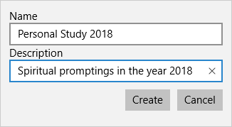
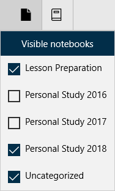

How Do I Work With Notebooks - Silent Video
How Do I Work With Notebooks - Silent Video How Do I Work With Notebooks - Silent Video
Notebooks are collections of markings, including highlights and underlines, and other annotations, including notes, tags, journal entries, and links. Unlike a physical notebook, a marking or annotation in Gospel Library can be in more than one notebook at the same time.
The Annotations page is an easy way to search your annotations, view a list of your annotations, navigate quickly to your annotations, and create new notebooks. You can open the annotations pane by pressing its button ( ) on the navigation bar on the left side of the app and then selecting the Notebooks tab.
) on the navigation bar on the left side of the app and then selecting the Notebooks tab.
There are two ways to create a new notebook in Gospel Library. The first is with the Create Notebook button ( ) on the Annotate ribbon. The second is via the Annotations pane, under the notebooks section (pictured above), where a "+New" button appears.
) on the Annotate ribbon. The second is via the Annotations pane, under the notebooks section (pictured above), where a "+New" button appears.
A prompt like the one below will appear, asking you to provide a name and a description for the notebook. Fill these in, then press the Create button. You now have a new notebook.
Your default notebook is the place where all new annotations are stored by default. You can change this option in the Annotate ribbon by selecting the Default Notebook button ( ) and choosing a new default notebook.
) and choosing a new default notebook.
A notebook can be deleted from the Annotation Pane (see below) by simply pressing the delete icon ( ) on the desired notebook.
) on the desired notebook.
When you create a new annotation, it is stored in your default notebook. If you want to include the new annotation in a different notebook, you can do so using the Annotations pane. You can also add notes, tags, and links to notebooks at any time using the annotations editor.
The default notebook can be changed by using the 'Default notebook' button on the Annotate ribbon.
To add an annotation to a notebook, search for it using the search feature of the Annotations pane or navigate to that annotation by opening the section that matches the type of annotation you want to add to the new notebook. For example, if you want to add a highlight or underline to a notebook, you would open the section called Highlights.
Click or press and hold on the annotation. When you let go, a little menu like the one below will appear. Press "Add to notebook...", then the name of the notebook you want to add the annotation to to add it. Similarly, you can remove an annotation from a notebook by choosing the "Remove from notebook..." option.
Notes and tags allow you to add them to various notebooks both when they are first created and when they are in edit mode in the annotations editor.
Because your annotations are stored in notebooks, not all of your annotations have to always be visible. The visible notebooks feature ( ), available in the View ribbon, allows you to show or hide annotations based on the notebook or notebooks they are stored in.
), available in the View ribbon, allows you to show or hide annotations based on the notebook or notebooks they are stored in.
For example, if you had completed your personal studies for the year 2017 and wanted to start with a fresh, clean copy of the Book of Mormon, you would not need to lose the spiritual insights that you've collected from the year to do so. Because your default notebook had been set to Personal Study 2017, you need only to create a new notebook for the new year, perhaps Personal Study 2018, set the new notebook to the default notebook, and turn off Personal Study 2017.
If an annotation appears in multiple notebooks, all of them must be turned off for the annotation to no longer be visible. This flexibility allows you to keep your Personal Study notes, for example, while still maintaining other useful collections of notes, like Lesson Plans, so that you can always see annotations that are relevant to your situation.
There are times when you want to start over again with a fresh set of scripture with none of your past annotations. You may then start to mark them over again. This may be done in an exercise to find scriptures that talk about Christ. This can be done with the following steps (using descriptions from the previous sections of this chapter).